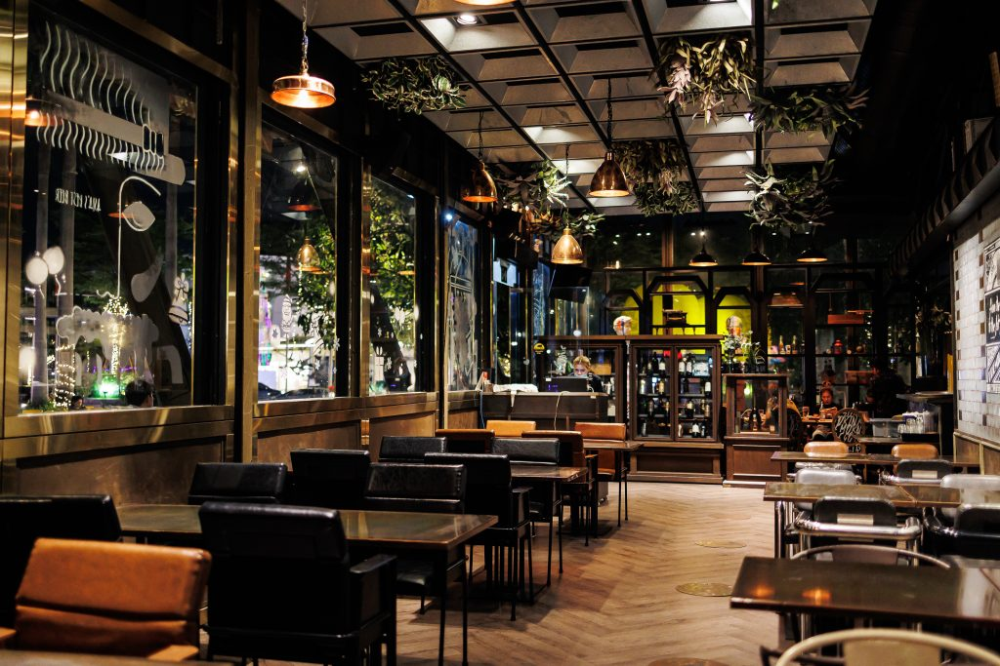

Meet Our Chefs

Chef Jamie’s Italian
อาหารไม่ใช่แค่การกิน
แต่มันคือการแบ่งปันความสุขจากการทำสิ่งที่เรารัก

ร้าน "CHEW RESTAURANT" ก่อตั้งโดยเจ้าของสองคนที่มีชื่อว่า "ชะเอม(Chaaim)" และ "นิว(New)"
ซึ่งการเลือกชื่อ "CHEW" มาจากการเล่นคำระหว่างชื่อของทั้งสองคน ร้านของเราได้รับแรงบันดาลใจจากความรักในอาหารอิตาเลียน
และความต้องการสร้างประสบการณ์การทานอาหารที่ไม่เหมือนใครสำหรับลูกค้าทุกคน
ที่ CHEW RESTAURANT เราใส่ใจในทุกรายละเอียด ตั้งแต่การเลือกวัตถุดิบที่สดใหม่
ไปจนถึงการเตรียมอาหารที่รังสรรค์ด้วยความพิถีพิถัน
เมนูของเราครอบคลุมทั้งอาหารจานหลัก สลัด เบเกอรี่ และเครื่องดื่มค็อกเทลที่คัดสรรอย่างดี
เพื่อตอบสนองความหลากหลายของความชอบและรสนิยม
นอกจากนี้ เรายังมีเมนูพิเศษที่เน้นความหลากหลายของรสชาติและการผสมผสานระหว่างอาหารอิตาเลียนและอาหารสไตล์ไทย
ที่จะทำให้คุณได้สัมผัสประสบการณ์การทานอาหารที่หลากหลายและไม่เหมือนใครที่ CHEW RESTAURANT ของเรา
อาหารไม่ใช่แค่การกิน
แต่มันคือการแบ่งปันความสุขจากการทำสิ่งที่เรารัก